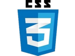

- MASOOD AHMAD
- Phone: +44 7537 173 888
- Skype: masoodahmad991
- masoodahmad991 [at] gmail.com
- (email preferred to communicate with)
Why applying? Having around 10 years of experience in numerous technologies. A journey from a coder to project manager/ architect, collaborating with techs and executives in U.S based companies mostly; it seems I have met my cap in my home country and to match up with my thirst of pace and competence, I am more inclined to leave the local market and look for more competitive work outside the borders.
Applying for: Equally interested for a position of software engineer/ programmer (any type/level) or project manager/ lead/ architect
Interested in: Javascript, Java, Python, Linux stack. Remote / home based job only.
 |
|
 |
|
|  | |
| --- Wish --- | --- list --- |
 |
| Languages & Technologies | |
|---|---|
| Java SE | 7 |
| Java EE | 5 |
| JavaFX | 3 |
| Spring 3: Core, MVC, Security | 4 |
| Hibernate | 4 |
| Python | 3 |
| JavaScript, es6 | 4 |
| Typescript | 3 |
| PWA progressive web app | 4 |
| Reactjs, Redux | 5 |
| jQuery & UI | 4 |
| HTML 5 | 5 |
| Css 3, SASS | 5 |
| Php | 3 |
| Android | 2 |
| IDEs | |
|---|---|
| Intellij idea, Netbeans, Eclipse | 5 |
| Vim | 3 |
| Operating Systems | |
|---|---|
| Linux Ubuntu, CentOS, RHEL | 7 |
| Mac OSX Mavericks | 3 |
| Windows Server 2008 | 3 |
| Servers | |
|---|---|
| Apache httpd | 4 |
| Nginx | 4 |
| Apache Tomcat, glassfish, wildfly | 4 |
| Databases | |
|---|---|
| MySQL | 4 |
| PostGreSQL | 4 |
| Networking | |
|---|---|
| Networking | 4 |
| Ethical Hacking | 4 |
| Project management tools | |
|---|---|
| Redmine | 7 |
| Planner (time-line) | 6 |
| Git (CLI) & GitHub | 5 |
| Bugzilla | 3 |
| Agility and scrum | 7 |
| Process flows & UML | 6 |
| Other Tools | |
|---|---|
| Maven | 5 |
| Selenium, puppeteer | 3 |
| Mysql workbench, pgAdmin, PhpMyAdmin, SQLYog | 3 |
| Technologies I have used non-extensively or would like to work with, due to interest. | |
|---|---|
| RabbitMQ, Cassandra, couchDB | |
| Sharding, Replication, Cluster: MySQL, PostGreSQL, OracleDB | |
| App Concurrency, Scalable systems, Load balancing, HAproxy, memcached | |
| Apache Solr, Lucene, Elasticsearch, Hadoop, Bigdata | |
| WebShere, WebLogics, Jboss, All with Java & JavaEE | |
| Spark, Linux, FreeBSD, NetBSD, Raspberry Pi, C++ | |
| AI (artificial intelligence), Tensorfow, keras |
-
- - Good verbal communications skills with foreign clients while managing the project as a whole
- - Very good at all kinds of written communications like business, technical or reporting.
- - Project management and architect
- - Team player and team lead abilities and skills
- - Result oriented with a "can do", "can make better" and "can resolve" attitude
- - Always polishing and adding skills
-
Solutions Architect & Senior project manager in CQ Soft
(a UAE based company in PK) (3 years)- Node.JS
- Google Analytics
- MixPanel Analytics
- Linux
Google Analytics & MixPanal Analytics Integrations & dashboards- Intgrated and created Google analytics & MixPanel analytics dashboards for node.js based app.
- Dealt pageviews, events, session and engagement time of user in a SPA (single page application).
- Node.JS
- Redis
- Drupal
- Linux
Node.js website integration with drupal in iframe- node.js based web portal integration with drupal (for documentation) in an frame.
- User authentication with redis and took care of layout and iframe issues and auto resizing of the iframe.
- Asterisk
- Dialplan
- Voip
Asterisk dialplan & calling help- Superwised and helped in asterik setup & dialplan development and automated call integration for a short project.
- Architect
- Consultant
- Development
- PostGreSQL
- JavaEE
- REST
- Android
Mobile app for baby products comparison- Technical advice and supervision
- Hands on Development
- Minor day to day help to other senior team leads.
- Architect
- Wordpress
- Magento
- Web Design
- Web Development
Several Wordpress, Magento & Web design projects- Technical advice and supervision
- Minor hands on Development
- Minor day to day help to other senior team leads.
- Project Manager
- Architect
- Request for Quotes reply
- Statement of work
- Guiding team
- Agile Sprints
Senior project manager & Architect for complex & large projects- Guided team and senior software developers when they needed help for various projects.
- Conversation with client in the U.S & U.K directly.
- Introduced and improved old agile and scrum methodologies in the company.
- Created Statement or work SOWs
- Replied Request for Quotes RFQs
- Created Redmine sprints and time lines for projects.
- Project Manager
- Architect
- Quickbooks
- SugarCRM
- Agile
Quickbooks & SugarCRM integration- Integrated synchronization between Quickbooks and SugarCRM via QB connector with short polling.
- Conversation with client in the U.S directly.
- Project Manager
- Architect
- Wordpress
- Agile
Large wordpress project- Created and integrated wordpress theme for a large university website having more than 500 pages.
- Conversation with client in the U.S directly.
- Project Manager
- Redmine
- Agility
- Scrum
- IBM Cognos BI
- SugarCRM
SugarCRM and IBM cognos business Intelligence integration- Managed a team of 15 people and followed agile and scrum based project management with proper time-lines.
- Conversation with client in the U.S directly.
- Project included: configuring IBM Cognos Business Intelligence server and creating custom reports from and in SugarCRM.
- We created installations guides and bundle installers for Windows (silent installers) and for Linux (bash script based).
- Architect
- Consultant
- Php
- MySQL
x2engine CRM projects- Technical advice and supervision for making Google calendar sync plug-in in x2engine
- Minor day to day help to other senior team leads.
-
Solutions Architect & Senior project manager in IT Boost LLC (The Help desk)
(a US based company in PK) (1 year)- Timelines
- Architecture
- Meetings & roadmaps
- Redmine
- Project Management
Team, time & efficiency management- Managed project deadlines, followed by flow, roadmaps, timelines, ETA & architectural discussions with team.
- Code review and guided team on best practices
- ReactJS
- Redux
- Typescript
- Babel
- Linting
- Node.JS
- ES2015
- WebPack
Improving & porting Angular1 based app to react+redux- Improved and ported a SPA (single page application) from Angular1 to react and redux with latest stable most technologies including ES 2015 and code linting, hot deployment etc
- Code review and guided team on best practices
-
Software Systems Architect in Maavan LLC (a U.S based company in PK)(3 months contract) - Architect
- Project Manager
- JavaEE
- Php
- Node.js
Architecht or gave advice for various software and lead the team- Architect various software (e.g a history time-line web based large scale software in JavaEE and node.js (for chat features)
- Lead the team, scrums, project time-line, guidance etc.
- Architect
- Project Manager
- Php
Architect a wordpress based plug-in for online work (like mini freelance site)- Build basic MVC framework in php and created database schema.
- Architect the plug-in for online work (like mini freelance site)
- JavaEE
- Selenium
Web spider that filled forms and tackled with JavaScript to get data for airline tickets-
Created a web spider that fetched data from different
statistics sites and produced reports in a custom way. The spider logged-in,
by-passed JavaScript authentication, handled redirects and fetched required data
from end page. This was by Selenium and Phantom.JS (headless browser).
- JavaEE
- PostGreSQL
Web spider that fetched data from statistics sites for mobile games-
Created a web spider that fetched data from different
statistics sites and produced reports in a custom way. This data was entered in a
database and very custom reports were produced.
-
Software Developer and team lead at Syncsys llc.(a U.S based company in PK)(2 years) - Java EE
- Spring MVC
- Spring Security
- Hibernate
- JSP
- CSS3
- HTML5
- Javascript
- jQuery
- PostGreSQL
Successfully created web based task management core application functionality as the sole developer and architecht.- - Created a notice board and task management application similar to learnkit.com
- - Made server side back-end and front end UI.
- Android
- Java EE
Android polling application- - Android - Made service that runs after every (x) minutes (usually 15) (to be virtually persistent and unstoppable by android OS..
- The service verfies credentials and sets up Shared Preferences, while talking to a java servlet (web server).
- Used Standard Android GUI, Fetching and controlling GPS location, Alarm Manager, Wake Locks and ForeGround Service.
- Java SE
- Java EE
- Jsp
- Servlets
Screen capture desktop software- - The application captured images of employees screen (desktop) and auto uploads it to a web server with predefined time interval. The snaps of all are viewable on the web. (latest snaps of all and all snaps of each individual)
- Java EE
- JSP
- Servlets
- CSS3
- HTML5
- MySql
- MVC
Website for Alpinema.com (under construction)- Configuring apache httpd and tomcat to run in integration.
- Involving latest CSS3 and HTML5 features with
- dynamic content generation,
- sign in and sign up forms with verification on email, user authentication,
- database integration,
- custom content management system.
- Php
Made referral module for opencart- - Customizing / adding affiliate and referral module in opencart.
- Linux Ubuntu
- network monitoring
- account administration
- chroot and jails
- ssh
- sftp
Controlled network in absence of the network administrator & made new configurations and features to network.- Assemeber Linux server as router for all traffic.
- Made accounts for all 40 employees and put them in jail and setup fail2ban to avoid bruteforce attacks (security measures)
- Configured sftp for file sharing
- Configure many software for network monitoring (such as ntop, iptraf etc)
-
Software Enigneer in Tricast Services Pvt Ltd (a U.A.E based company in PK)(6 months Contract) - JavaEE
- Struts 2
- MySQL
Chat module and application optimization for one of the largest mobile application in Pakistan - "Cricket Companion" (Pasha award winning application)- - Successfully created chat module .
- - Performance optimization & refactoring of MySQL database structure.
-
IT and Systems Executive in CCAPS. (2 years) - Lab Maintenance
- Network Management
- Software Development
Computer lab management- Managed a computer lab of 40 computers, administration, networking,
- software development in variety of languages, backups and all other I.T affairs.
- Java EE
- Linux
- CSS2
- xhtml
Managing a Linux VPS since 1 year with- apache web-server, tomcat web-server
- maintainingInspircd IRC chat server
- made website for IRC server http://open-pages.com
- Java EE
- JSP
- Servlets
- JDBC
- MySQL
- CSS2
Website for a chat server- Besides the usual home page and css layouts, its a web page for users of a chatting group, comprising a comments submission page that authenticates users by database and then publishes their comments on the web (after storing them on the database).
- This web uses the modern conventions of separation of presentation layer, business logic, and database layer ( MVC )
- JavaFX
- JDBC
- MySQL
- Collections
Accounts Software Modules- Setup Wizard, Sales and Purchases with Chart of Accounts Management.
- Database verification, information collection, creating database, tables and initializing schema. Adding and viewing chart of accounts. Sales,Purchase and Stock management
- Java SE
- Threads
- IO Streams
- Collections
Advanced IRC Bot for mass messaging- Based on a proxy:port list, nick list and channel list. Connects several integrated bots with different nicks and proxies, get chatter nicks and messages them in integration (amongst multiple active connections)
- Java SE
- IO Streams
Student Assignment Submission System- Comprising of a client and server application. Student connects to the with its IP and asked to submit credentials and project text file. The server then receives, verifies and saves the text and credentials following a confirmation reply to the client.
- Networking
- Scanning
- Sniffing
- DOS attacks
- Vulnerability assessment
- Many Others
Ethical hacking and penetration tests.- Research and practice on networks and computers for vulnerabilities. How to exploit them and how to protect against them.
- Many tools like nmap, Cain & Abel, John the ripper, Nessus, DDosers, flooders, RootKits, worm, etc
-
Software Developer Trainee in Camba.tv Faisalabad. (1 month). - Java
- C#
- - Research and software development for camera specific alert streams.
- - Research and software development on image viewing applets.
- JavaFX
- Applets
- Threads
Video viewer for IP Cameras for http://Camba.tv- Made a video out of jpg images live and in real time with multi-threading
-
Making a web site similar to stackoverflow.com forum site. - Java EE
- Spring
- Hibernate
- PostGreSQL
- HTML5
- CSS3
- Trying to get forum and chat features in integration.
-
Polishing current skills and adding more. This never ends. - Spring
- Aspect oriented programming
- Hibernate
- All other skills
- Getting further grip on Spring, Spring AOP (aspect oriented programming, Hibernate and all other skills I have.
-
Year of birth 1984 Marital Status Married Residence Pakistani national, travelling around the world.